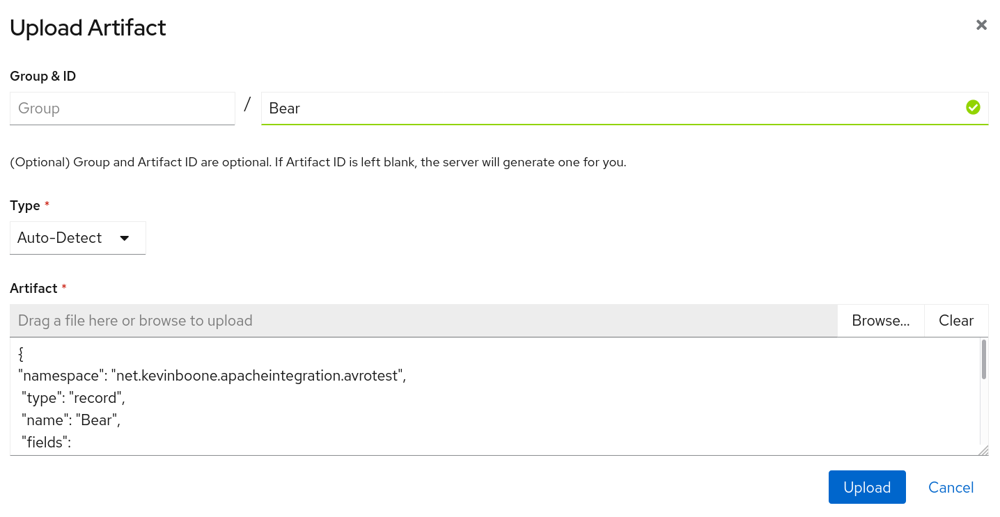

Using Apache Avro for passing Java objects through a message broker, with a schema registry
Introduction
 This article follows directly from
my previous example on using Avro with a message broker, and uses essentially the same demonstration code and set-up.
However, in the previous article, the communicating clients used a local
copy of the Avro schema on disk. In this article, we'll store the
Avro schema in the Apicurio schema registry.
This article follows directly from
my previous example on using Avro with a message broker, and uses essentially the same demonstration code and set-up.
However, in the previous article, the communicating clients used a local
copy of the Avro schema on disk. In this article, we'll store the
Avro schema in the Apicurio schema registry.
Note:
I don't normally presume to tell readers the order or manner in which they should read things. However, it's only fair for me to warn the reader that, without a fairly detailed reading of my previous article, this one will be incomprehensible.
I will show source code that demonstrates the salient new features
but, in fact, there are few changes in the source from the previous
example. The few changes are in the build process, particularly in
the Maven pom.xml.
Full source code of this example is available in
my GitHub repository
To run the example you'll need an AMQP (1.x)-compatible message broker, like Apache Artemis, or the Red Hat product based on it, AMQ 7. You'll also need a running instance of Apicurio registry.
Note:
Apicurio schema registry is one of a set of Apicurio tools, which includes a graphical schema designer and data modeler. When I use the term "Apicurio" in this article, I'll always mean the schema registry.
Recap
In my previous example, I showed how to set up two Java clients that passed structured data through an AMQP message broker. The data was serialized and deserialized using Apache Avro, which uses a compact binary representation. Part of the reason for the compactness is that Avro depends on a schema, which indicates the composition of the structured object. The schema must be available to all clients that use the same structured data.
In the previous example, the structured data was a list of cartoon bears -- Yogi, Paddington, etc. The sending client created a list of these objects, serialized them using Avro, and placed them on the message broker. The receiving client read the binary data from the broker, and deserialized it using Avro. Both the sender and receiver used a representation of the Avro schema in a local file. This is an impractical arrangement in a large, complex installation, and it's more common to use a schema registry like Apicurio.
About Apicurio schema registry
Apicurio registry is a store for schema artefacts, with an HTTP REST interface. Clients make REST requests to add, modify, query, and retrieve schema artefacts. Apicurio registry does not store the artefacts itself -- it delegates this to a storage backend -- a relational database or a Kafka installation. In this example, we'll use the default, in-memory database.
Kafka is a message-handling or event-handling platform, and it doesn't seem a natural thing to use as a storage back-end for a schema registry. However, Apicurio is widely used with the combination of Avro and Kafka. Since Kafka can store long-lived data -- even though this is not its usual mode of operation -- it makes sense to store schema artefacts in Kafka topics, rather than providing an additional means of storage. It's a pragmatic arrangement, rather than a logical one.
In this simple application, we'll be using Apicurio as little more than a webserver. We'll use the web-based user interface to upload and name the schema, and the build process for the clients will obtain the schema using this same name. However, Apicurio offers much more than this. In particular, it provides a way to manage schema updates, using user-defined rules that prevent breaking changes being made to public APIs.
Apicurio registry is a Java application implemented using the Quarkus framework. It has some built-in understanding of Avro schema artefacts, but it isn't limited to this kind of data.
Setting up Apicurio
Apicurio is available pre-built in a number of different formats but, for this simple application, we'll use the source code so we can run in "dev" (development) mode.
Note:
I'm mostly focusing on using Apicurio with simple, command-line operations. The command-line examples that follow are for Linux, but I imagine that similar approaches will work with other platforms. However, this isn't something I've tested.
Download the source from GitHub either by cloning the repository, or simply downloading and unpacking the source bundle.
You should be able to build Apicurio using Maven:
$ ./mvnw clean package -DskipTests
and run it in dev mode like this:
$ ./mvnw quarkus:dev
However, bear in mind that Apicurio requires Java version 11 or later, which
can be a bit of a nuisance for people who use multiple Java versions on
the same machine. You'll need to set the $PATH to indicate
the required Java runtime, as well as setting JAVA_HOME.
For example:
$ PATH=/usr/jdk-15/bin/:$PATH JAVA_HOME=/usr/jdk-15/ ./mvnw package -DskipTests
When it's running, Apicurio listens on HTTP port 8080. In "dev" mode it does no authentication, and stores schemas in an in-memory (non-persistent) database. If you restart Apicurio you'll need to upload the schema again, but uploading a single schema doesn't take more than a few seconds.
Uploading the AVRO schema to Apicurio
The schema is in the source code bundle as the file
schema/bear.schema. I have purposely not
used the conventional ".avsc" as the filename extension, because the Avro Maven
plugin is too clever -- it will search the filesystem for
.avsc files and, if it finds one, will use it in preference to the
version in the Apicurio registry. It's difficult to prove that the registry
is really workin, if the same information can easily be found in local
storage.
Point a web browser to the Apicurio server, typically
localhost:8080.
Select "Upload artifact". Fill in the "name" field as "Bear", but
leave the group name blank. Use the "Browse" button to locate the file
`bear.schema`. The interface should look like this:

Note that Apicurio is case-sensitive in naming; the clients will have to use the specific name "Bear" to download the schema, not "bear".
With the schema in place, the Apicurio interface should look this this:
Testing that the schema can be retrieved
The simplest thing that a client can do is to retrieve a specific
schema. In fact, we can test that using a simple HTTP client
like curl:
$ curl http://localhost:8080/api/artifacts/Bear
If everything is OK, we should get a copy of the schema that we originally uploaded.
Clients can also search for schema artefacts by name, and by other characteristics. A simple search might be:
$ curl http://localhost:8080/api/search/artifacts?search=Bear
Without a search term, this request will simply list all schema IDs on the server. Search results are in JSON format, but actual schema elements are returned in whatever format they were originally provided. With Avro, schema definitions are also in JSON format, which is why the Apicurio server always appears to respond with JSON -- that's just a coincidence.
Integrating Apicurio registry into the build process
Most of the build process is exactly the same as in my previous
example. The only difference is that there is a new step that
retrieves the schema from the registry. There is a Maven plug-in
for this, as there is for building the necessary Java classes
from the schema. The addition to the Maven pom.xml
looks like this:
<properties>
<apicurio.version>1.3.2.Final</apicurio.version>
<apicurio.url>http://localhost:8080/api</apicurio.url>
</properties>
...
<plugin>
<groupId>io.apicurio</groupId>
<artifactId>apicurio-registry-maven-plugin</artifactId>
<version>${apicurio.version}</version>
<executions>
<execution>
<phase>generate-sources</phase>
<goals>
<goal>download</goal>
</goals>
<configuration>
<registryUrl>${apicurio.url}</registryUrl>
<ids>
<param1>Bear</param1>
</ids>
<artifactExtension>.avsc</artifactExtension>
<outputDirectory>${project.build.directory}</outputDirectory>
</configuration>
</execution>
</executions>
</plugin>
There are a few points to note about this definition.
The Apicurio URL includes the
/api/prefix. Without this, the plug-in will be making requests on the Apicurio web console, which won't do anything useful.The plug-in can download multiple artefacts, by being provided with a list of IDs.
The
outputDirectoryconfiguration indicates where the downloaded schema will be stored. This neeeds to be in some place where it will be found by the Avro plugin. Since the Avro plug-in can search for.avrofiles in any subdirectory of a specified base directory, we don't need to be too fussy. However, since the schema may change, we want to put it in a directory where amvn cleanoperation will delete it.${project.build.directory}expands to thetarget/directory where Maven places generated code.Placing the downloaded schema into the
targetdirectory implies that the client application will have to be able to find the file, in that directory, at runtime. We could arrange to have the client download the schema from the registry at runtime. Although it's quite a lot more complicated, we could also have the client convert the schema into Java classes at runtime. If we're not doing that -- if we're doing this conversion at build time -- there's little point in having the client download the schema at runtime. We'd be creating a run-time dependency on the registry for no benefit. Still, in a real application, we could place the schema file into the client's JAR, and then load it from the classloader, rather than referring to a file on disk, which is a little ugly.
In short, when we run mvn package, the Maven Apicurio
plug-in will retrieve the schema by its ID, and store it in the
application's target/ directory. The Avro plug-in will
then find that schema, and convert it to one or more Java classes,
which it will insert into the application's source tree, and which
will then get compiled.
Running the example
Everything that is new about this example, compared to the previous
one, takes place at build time. Therefore running the code is exactly
the same as before: with the message broker running, run the sender
application from the sender/ directory, and the receiver
application from the receiver/ directory. You should see
the structured data being displayed by the receiver as it arrives.
Note that, with this specific implementation, the registry is not required, and need not be running, during the client's runtime. All of the registry-related work has already been done before any client runs.
Closing remarks
This article present the simplest, practical use of Avro with Apicurio that I could think of. Since we're using a message broker for passing data, it would be nice if Apicurio could use the broker as a storage back-end, as it can with Kafka. That would allow for a tidy installation. Sadly, however, there is not such implementation. If you want to store schema artefacts for use with a message broker, you'll need to set up some kind of storage back-end -- most likely a relational database.
I've only scratched the surface of what the schema registry can do, and the ways it can be integrated into a software build workflow. I've also not even touched on authentication, version control, containerization, or the use of the registry for schema types other than Avro. These are, perhaps, subjects for later articles.